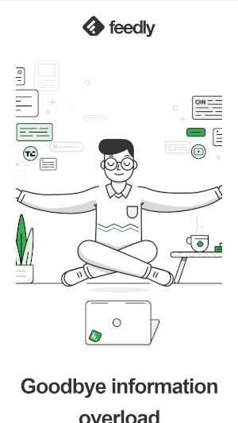

Contrast
Slack Technologies
slack.comSlack.com is an excellent example when it comes to the principle of contrast. The information that the user is supposed to focus on often uses dark and vibrant colors which work well against the white background. This is more pronounced do to the abundant use of white space. In particular the deep purple used within the site for the navigation makes it very easy to distinquish from the content being read.
Repetition
Feedly
feedly.com Feedly.com does repetition very well. The most notable example of this lies in its color scheme with many things being black and white with a dash of green which ultimately leads to the green standing out more. That's not the only example of repitition however as throughout the homepage in particular a consistent use of the same art style with the images used helps maintain the same feel, and really helps the site maintain its cohesion.
Fitt's Law
Paypal
paypal.comThe Paypal website makes great use of Fitt's Law particularly on mobile. In a mobile browser the buttons that they want the user to be able to access end up being in the upper left for the menu, upper right for logging in, and in the center of the page for signing up. Even the button for signing up is in the upper portion of the screen which makes it an easy place to reach from the address bar while still using the center location to draw the eyes for new users.